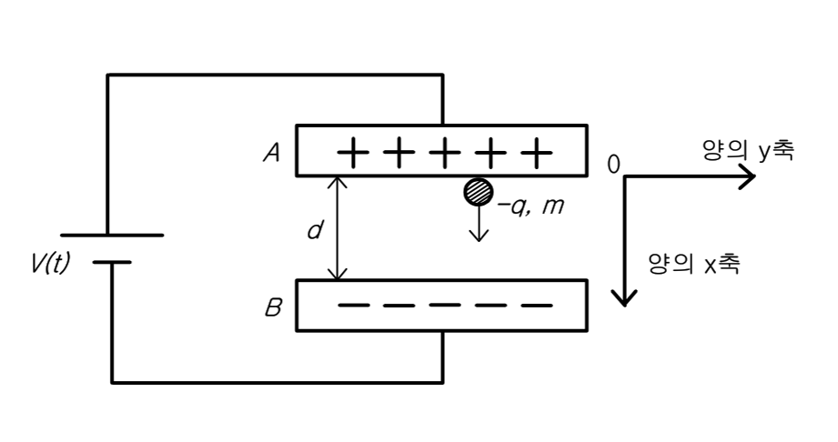

문제 7
평행한 두 금속판에 형성된 전기장 속에서 일어나는 음전하의 운동을 알아보자. 두 금속판의 전위차는 시간 \(t\)에 따라 \(V = \alpha t\) (여기서 \(\alpha\)는 상수; \(t \leq 0\)일때 \(V = 0\))와 같이 변하고, 음전하는 \(t = 0\)일 때 그림과 같이 A판에 정지상태로 있다가 B판으로 떨어진다.

(1) 시간이 \(t\)(\(t > 0\))일 때 전기장의 세기를 구하고 음전하에 작용하는 정전기력의 방향과 크기를 구하시오. (10점)
(2) 시간이 \(t\)(\(t > 0\))일 때 음전하에 작용하는 중력의 방향과 크기를 구하시오. 단, 중력가속도는 \(g\)라고 놓으시오. (10점)
(3) 뉴턴의 운동 제 2법칙을 이용하여 음전하의 가속도를 구하고, 가속도가 0이 되는 시간 \(t_0\)를 구하시오. (10점)
(4) 위 문항 (3)에서 구한 가속도를 이용하여 음전하의 속도를 구하고, 속도가 0이 되는 시간 \(t_1\)을 구하시오. (단 \(t_1\) 동안 음전하가 움직인 거리가 \(d\)보다 작다고 가정한다.) (10점)
(5) 시간 \(t_1\) 이후의 음전하의 운동 방향을 구하시오. (10점)